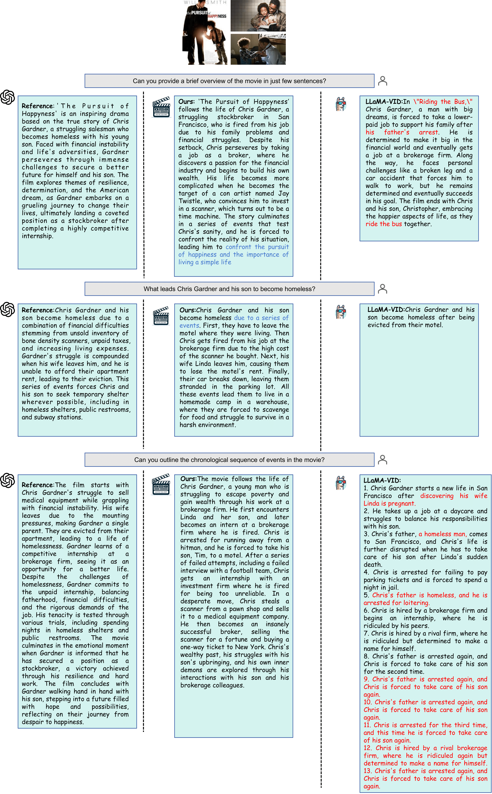
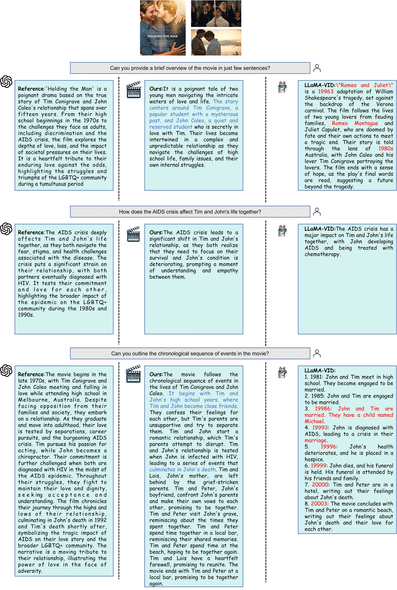
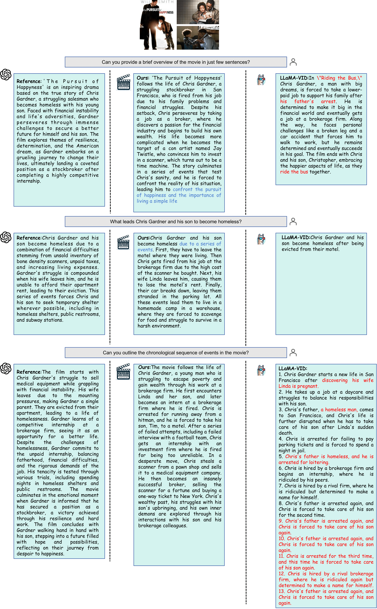
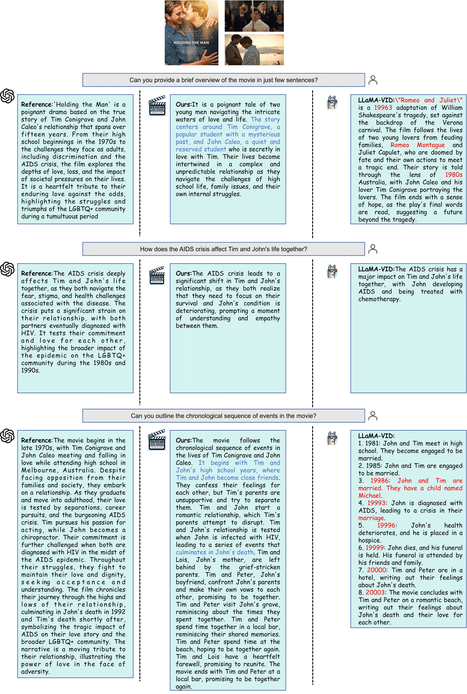

Abstract
The development of multimodal models has marked a significant step forward in how machines understand videos. These models have shown promise in analyzing short video clips. However, when it comes to longer formats like movies, they often fall short. The main hurdles are the lack of high-quality, diverse video data and the intensive work required to collect or annotate such data. In the face of these challenges, we propose MovieLLM, a novel framework designed to create synthetic, high-quality data for long videos. This framework leverages the power of GPT-4 and text-to-image models to generate detailed scripts and corresponding visuals. Our approach stands out for its flexibility and scalability, making it a superior alternative to traditional data collection methods. Our extensive experiments validate that the data produced by MovieLLM significantly improves the performance of multimodal models in understanding complex video narratives, overcoming the limitations of existing datasets regarding scarcity and bias.
Pipeline
The overall pipeline of our MovieLLM. (a) Rather than limiting plot generation to conventional data sources such as the web or existing datasets, we harness the power of GPT-4 to produce synthesized data. By providing specific elements such as themes, overview, and styles, we guide GPT-4 to produce movie-level key frame descriptions tailored to the latter generation process. (b) By adeptly employing textual inversion, we immobilize the style descriptions generated from the script onto the latent space of the diffusion model. This approach guides the model to generate scenes in a fixed style while maintaining diversity under a unified aesthetic. (c) By integrating the powerful generative capabilities of GPT-4 with the developed style-guided diffusion model, we produce style-consistent key frames and corresponding QA pairs, resulting in a comprehensive instruction tuning corpus, combining the visual data with QA pairs.
More Results
 



BibTeX
@misc{song2024moviellm,
title={MovieLLM: Enhancing Long Video Understanding with AI-Generated Movies},
author={Zhende Song and Chenchen Wang and Jiamu Sheng and Chi Zhang and Gang Yu and Jiayuan Fan and Tao Chen},
year={2024},
eprint={2403.01422},
archivePrefix={arXiv},
primaryClass={cs.CV}
}